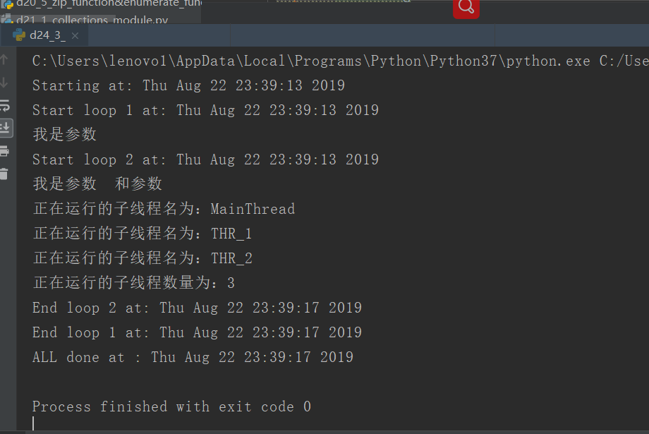
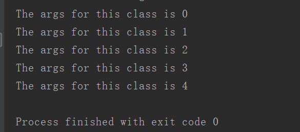

原文出处:本文由博客园博主心悦君兮君不知-睿提供。
原文连接:https://www.cnblogs.com/ruigege0000/p/11397571.html
原文连接:https://www.cnblogs.com/ruigege0000/p/11397571.html
一、线程常用属性
1.threading.currentThread:返回当前线程变量
2.threading.enumerate:返回一个包含正在运行的线程的list，正在运行的线程指的是线程启动后，结束前的状态
3.threading.activeCount：返回正在运行的线程数量，效果跟len(threading.enumer)一样
4.thr.setName:给线程设置名字
5.thr.getName:得到线程的名字。
举例：
i
mport _thread as thread
import time
def loop1(in1):
print("Start loop 1 at:",time.ctime())
print("我是参数",in1)
time.sleep(4)
print("End loop 1 at:",time.ctime())
def loop2(in1,in2):
print("Start loop 2 at:",time.ctime())
print("我是参数",in1,"和参数 ",in2)
time.sleep(4)
print("End loop 2 at:",time.ctime())
import threading
def main1():
print("Starting at:",time.ctime())
t1 = threading.Thread(target=loop1,args=('',))
t1.setName("THR_1")#给线程重命名
t1.start()
t2 = threading.Thread(target=loop2,args=('',''))
t2.setName("THR_2")
t2.setDaemon(True) #主线程运行完了就完了，不用等线程2
t2.start()
time.sleep(3)#三秒后两个子线程仍然在运行着，因为他们里面有一个四秒在停着
for thr in threading.enumerate():#返回的是正在运行的子线程的列表
print("正在运行的子线程名为：{0}".format(thr.getName()))#读取了该线程的名字
print("正在运行的子线程数量为：{0}".format(threading.activeCount()))#打印出了线程的数量，包括主线程和两个子线程一共3个线程
t1.join()#等线程1运行完了再接着向下运行
print("ALL done at :",time.ctime())
if __name__ == "__main__":
main1()

二、直接继承子类threading.Thread
1.直接继承Thread；重写run函数
2.例子：
class MyThread(threading.Thread):#定义一个Thread的子类
def __init__(self,args):#重写__init__函数，其中参数为self和新引入的参数
super(MyThread,self).__init__()#固定格式，继承父类的__init__函数
self.args = args
def run(self):
time.sleep(1)
print("The args for this class is {0}".format(self.args))
for i in range(5):
t = MyThread(i)
t.start()
t.join()
三、源码
d24_3_other_multi_thread_attribute.py
https://github.com/ruigege66/Python_learning/blob/master/d24_3_other_multi_thread_attribute.py
2.CSDN：https://blog.csdn.net/weixin_44630050（心悦君兮君不知-睿）
3.博客园：https://www.cnblogs.com/ruigege0000/
4.欢迎关注微信公众号：傅里叶变换，后台回复”礼包“，获取大数据学习资料